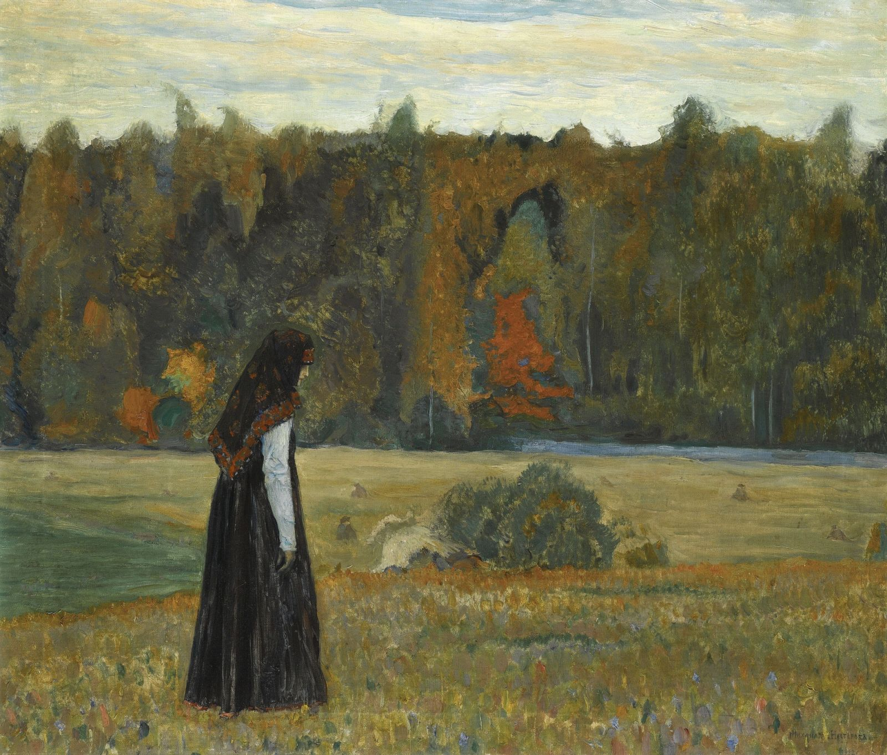

Among artists interested in Russia's past before Peter the Great's Westernization Viktor Vasnetsov and Mikhail Nesterov are the most important. Viktor Vasnetsov used the themes from Russian folklore for his works. Mikhail Nesterov was interested in religious mysticism and tried to convey those themes in his images.
The world captured in Nesterov’s paintings and the world portrayed here in this painting are the worlds of gone by days, places of stilness, tradition and repose while in reality the years in which some of these paintings, this one in 1922 for example, were particularly turbulent in Russia. These paintings were, perhaps, for Nesterov as well as for us a means of escaping the reality with its changes and the fast-paced life, and retreating into a world which is a mix of old times and religious meditation.
Venerable Sergius of Radonezh (born Batholomew), also transliterated as Sergey Radonezhsky or Serge of Radonezh, was a spiritual leader and monastic reformer of medieval Russia. Together with Venerable Seraphim of Sarov, he is one of the Russian Orthodox Church's most highly-venerated saints.
The date of his birth is (1314). As his medieval hagiographic biography states, he was born to a noble family near Rostov Velikiy. He was originally baptized with the name Bartholomew. His parents Kirill and Maria became impoverished and moved to Radonezh together with their three sons: Stefan, Bartholomew and Peter. Although an intelligent boy, Bartholomew had great difficulty learning to read. His Life states that a starets (spiritual elder) met him one day and gave him a piece of prosphora (holy bread) to eat, and from that day forward he was able to read. Orthodox Christians interpret the incident as being an angelic visitation.
Alexey Remizov mentions this episode in his story about Peter and Fevronia.